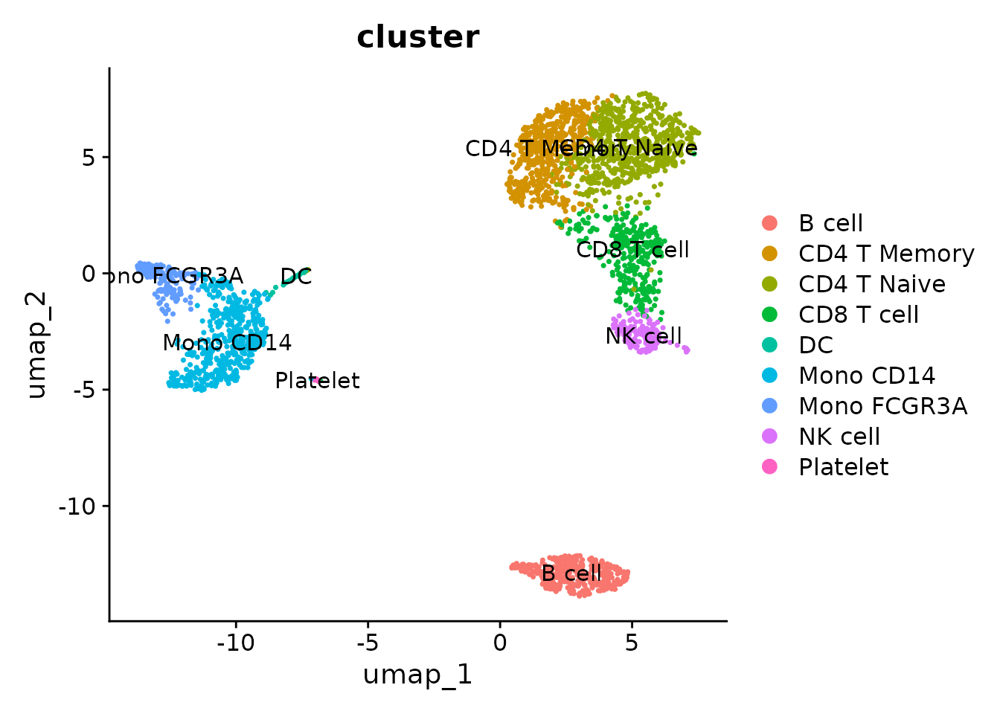

Lesson 2: Basic Single-Cell Analysis Workflow with Seurat
Yichao Hua
2024-11-29
2.Seurat.RmdIntroduction to Single-Cell Analysis with Seurat
Seurat is the most popular framework for analyzing single-cell data in R. It provides structured data storage, basic analysis workflows, and visualization solutions. Before we dive into the code, let’s introduce some fundamental concepts and principles of single-cell data analysis. This background will help us better understand the process.
From Raw Data to Visualization: The Single-Cell Analysis Journey
When we first receive sequencing data, it’s typically in the form of FASTQ files. These are text files that contain the raw nucleotide sequences. A typical FASTQ file looks like this:
A key milestone in our single-cell analysis journey is to visualize cells using a UMAP (Uniform Manifold Approximation and Projection) plot, with colors distinguishing different cell clusters:
So, what happens between the raw FASTQ files and the final UMAP visualization? Here’s a simplified flowchart of the process:
Let’s break down each step of this process:
1. Mapping
This step aligns the raw sequences from the FASTQ files to a reference genome, resulting in a gene count matrix:
In this matrix: - Rows represent gene names - Columns represent cell names - Each cell contains a non-negative integer representing the number of reads for each gene in each cell
A “read” is an important concept - it represents one RNA fragment. For 10X sequencing data, this step is typically performed using CellRanger on a Linux server rather than a personal computer.
2. Data Normalization
From this point onwards, we’ll be working on our personal computers. When we import the gene count matrix, we can’t use it directly for analysis because each cell has a different sequencing depth and read count, making direct comparisons impossible. Normalization addresses this issue in two steps:
- Normalize by library size
- Log transform
The result is a matrix of the same size as the gene count matrix, but containing normalized gene expression values:
3. PCA (1st Dimension Reduction)
Principal Component Analysis (PCA) is our first step in dimension reduction. The original data has too many dimensions (e.g., 20,000 genes or features), making direct analysis computationally intensive. PCA reduces this to about 20-50 principal components (PCs).
We can roughly understand each PC as representing a group of genes that characterize or distinguish different cell types. For example, PC1 might relate to macrophages, PC2 to lymphocytes, and so on. Using PC1 and PC2, we can start to distinguish between macrophages, lymphocytes, and other cell types.
The output of this step is still a matrix, but much smaller than the original normalized matrix. It changes from a row (~20k genes) x column (cells) matrix to a row (cells) x column (20-50 PCs) matrix:

4. Unsupervised Clustering
After the first PCA dimension reduction, we perform two parallel steps. One of these is unsupervised clustering.
Imagine a three-dimensional space where each point represents a cell. Cells that are closer in this space have more similar characteristics, so we group nearby cells into the same cluster. While our brains can only visualize three dimensions, computers can work in higher dimensions.
Using information from a selected number of top PCs (often ranging from 10 to 50, depending on the dataset), algorithms help us find and group similar cells in this high-dimensional space. The optimal number of PCs to use can vary based on the complexity and characteristics of your data.
5. Visualization: UMAP/t-SNE (2nd Dimension Reduction)
While the first PCA reduction allows us to distinguish some major groups using PC1 and PC2, more detailed grouping information might be contained in later PCs. To visualize this information in a two-dimensional plot, we need a second dimension reduction step. The most commonly used method for this is UMAP (Uniform Manifold Approximation and Projection).
UMAP compresses the multi-dimensional PC information (e.g. top 10-50 PCs, depending on the dataset) into two dimensions, allowing us to visualize cell differences more intuitively. The number of PCs used should be optimized for each dataset. This step gives us x-y coordinate points for each cell:

6. Final Visualization
Finally, we combine the information from unsupervised clustering and UMAP. We plot each cell on the UMAP coordinates and color-code them based on their cluster assignment. This gives us the standard UMAP plot we aim for in single-cell analysis:
This overview covers the basic workflow and principles of single-cell analysis. In the next section, we’ll learn how to implement these steps using R code and the Seurat package.
Implementing Single-Cell Analysis with Seurat
Now that we understand the basic workflow, let’s implement these steps using R code and the Seurat package.
1. Load Required Libraries
Before we begin, make sure you have installed the Seurat package. If you haven’t, you can install it using:
# install.packages("Seurat")Now, let’s load the library:
2. Load the Data
First, let’s set your working directory to where we’ll store all course materials. If you followed Lesson 1, this would be:
# Set working directory to the course folder created in Lesson 1
# If you used a different location, replace this path with your chosen directory
setwd("~/Documents/single-cell-course")Now let’s download and extract the course data:
# Download the course data (this may take a few minutes depending on your internet connection)
download.file(
"https://zenodo.org/records/14245429/files/single-cell-course-data.zip",
destfile = "course_data.zip"
)
# Extract the downloaded zip file
unzip("course_data.zip", exdir = "data")We’ll be using a pre-downloaded 10x Genomics dataset of 3k PBMCs (Peripheral Blood Mononuclear Cells). The original dataset is available from this link. The data should now be in a folder named “data/pbmc3k/filtered_gene_bc_matrices/”.
This is a typical format for a gene count matrix from 10X CellRanger
output. It includes three files: barcodes, genes/features, and matrix.
We’ll use Seurat’s Read10X function to read this
information into R:
raw_matrix <- Read10X("data/pbmc3k/filtered_gene_bc_matrices/")
raw_matrix[101:120,1:20]## 20 x 20 sparse Matrix of class "dgCMatrix"## [[ suppressing 20 column names 'AAACATACAACCAC-1', 'AAACATTGAGCTAC-1', 'AAACATTGATCAGC-1' ... ]]##
## GABRD . . . . . . . . . . . . . . . . . . . .
## RP11-547D24.3 . . . . . . . . . . . . . . . . . . . .
## PRKCZ . . . . . . . . . . . . . . . . . . . .
## RP5-892K4.1 . . . . . . . . . . . . . . . . . . . .
## RP11-181G12.2 . . . . . . . . . . . . . . . . . . . .
## C1orf86 . . . . . . . . 1 . . . . . . . . . . .
## AL590822.2 . . . . . . . . . . . . . . . . . . . .
## AL590822.1 . . . . . . . . . . . . . . . . . . . .
## RP11-181G12.5 . . . . . . . . . . . . . . . . . . . .
## RP11-181G12.4 . . . . . . . . . . . . . . . . . . . .
## SKI . . . . . . . . . . . . . . . . . . . .
## MORN1 . . . . . . . . . . . . . . . . . . . .
## AL589739.1 . . . . . . . . . . . . . . . . . . . .
## RER1 . 1 1 1 . . . . . . . 1 . 1 . . . . 2 .
## PEX10 . . . . . . . . . . . . . . . . . . . .
## PLCH2 . . . . . . . . . . . . . . . . . . . .
## RP3-395M20.2 . . . . . . . . . . . . . . . . . . . .
## RP3-395M20.3 . . . . . . . . . . . . . . . . . . . .
## PANK4 . . 1 . . 1 . . . . . . . . . . . . . .
## HES5 . . . . . . . . . . . . . . . . . . . .The code above extracts a portion of the raw count matrix. You’ll see that rows represent genes, columns represent cells, and the values are non-negative integers.
3. Create a Seurat Object
A Seurat object is one of the standardized formats for storing single-cell data. Let’s create one:
pbmc <- CreateSeuratObject(
raw_matrix,
min.features = 200, # Keep cells with at least 200 detected genes
project = "pbmc_3k", # Name of the project
min.cells = 1 # Keep genes detected in at least 1 cell
)## Warning: Feature names cannot have underscores ('_'), replacing with dashes
## ('-')Let’s take a closer look at our Seurat object. The structure of a
Seurat object is similar to a list, but with a key difference: Seurat
objects have fixed slots, while list elements can be arbitrarily added
or removed. We access slots in a Seurat object using the @
symbol.
To explore the object:
View(pbmc) # Opens a viewer to explore the objectThere’s a lot of information here, which we’ll gradually become familiar with. For now, let’s focus on two crucial components:
- The raw count matrix:
pbmc@assays$RNA$counts[1:20, 1:20] # View a small portion of the raw count matrix## 20 x 20 sparse Matrix of class "dgCMatrix"## [[ suppressing 20 column names 'AAACATACAACCAC-1', 'AAACATTGAGCTAC-1', 'AAACATTGATCAGC-1' ... ]]##
## AL627309.1 . . . . . . . . . . . . . . . . . . . .
## AP006222.2 . . . . . . . . . . . . . . . . . . . .
## RP11-206L10.2 . . . . . . . . . . . . . . . . . . . .
## RP11-206L10.9 . . . . . . . . . . . . . . . . . . . .
## FAM87B . . . . . . . . . . . . . . . . . . . .
## LINC00115 . . . . . . . . . . . . . . . . . . . .
## FAM41C . . . . . . . . . . . . . . . . . . . .
## SAMD11 . . . . . . . . . . . . . . . . . . . .
## NOC2L . . . . . . . . . . . 1 . . . . . . . .
## KLHL17 . . . . . . . . . . . . . . . . . . . .
## PLEKHN1 . . . . . . . . . . . . . . . . . . . .
## RP11-54O7.17 . . . . . . . . . . . . . . . . . . . .
## HES4 . . . . . . . . . . . . . . . . . . 1 .
## RP11-54O7.11 . . . . . . . . . . . . . . . . . . . .
## ISG15 . . 1 9 . 1 . . . 3 . . 1 5 . 2 1 1 1 .
## AGRN . . . . . . . . . . . . . . . . . . . .
## C1orf159 . . . . . . . . . . . . . . . . . . . .
## TNFRSF18 . 2 . . . . . . . . . . . . . . . . . .
## TNFRSF4 . . . . . . . . 1 . . . . . . . . . . 12
## SDF4 . . 1 . . . . . . . . . . . . . . . . 1- The meta.data, a data frame storing information about all cells:
head(pbmc@meta.data) # View metadata associated with cells## orig.ident nCount_RNA nFeature_RNA
## AAACATACAACCAC-1 pbmc_3k 2421 781
## AAACATTGAGCTAC-1 pbmc_3k 4903 1352
## AAACATTGATCAGC-1 pbmc_3k 3149 1131
## AAACCGTGCTTCCG-1 pbmc_3k 2639 960
## AAACCGTGTATGCG-1 pbmc_3k 981 522
## AAACGCACTGGTAC-1 pbmc_3k 2164 782Seurat automatically creates three columns in the meta.data:
-
orig.ident: Usually indicates the sample source (we only have one sample here) -
nFeature_RNA: Refers to nGene, the number of genes detected in the cell -
nCount_RNA: Refers to the number of reads, representing sequencing depth
If we want to add cell-related information later (such as clustering or treatment conditions), we’ll add it to meta.data.
You can view all cell names and gene names using
colnames() and rownames():
## [1] "AAACATACAACCAC-1" "AAACATTGAGCTAC-1" "AAACATTGATCAGC-1" "AAACCGTGCTTCCG-1"
## [5] "AAACCGTGTATGCG-1" "AAACGCACTGGTAC-1" "AAACGCTGACCAGT-1" "AAACGCTGGTTCTT-1"
## [9] "AAACGCTGTAGCCA-1" "AAACGCTGTTTCTG-1"## [1] "AL627309.1" "AP006222.2" "RP11-206L10.2" "RP11-206L10.9"
## [5] "FAM87B" "LINC00115" "FAM41C" "SAMD11"
## [9] "NOC2L" "KLHL17"4. Normalize the Data
This step adjusts for differences in sequencing depth between cells:
pbmc <- NormalizeData(pbmc)## Normalizing layer: countsLet’s view a portion of the normalized data:
pbmc@assays$RNA$data[1:20, 1:10]## 20 x 10 sparse Matrix of class "dgCMatrix"## [[ suppressing 10 column names 'AAACATACAACCAC-1', 'AAACATTGAGCTAC-1', 'AAACATTGATCAGC-1' ... ]]##
## AL627309.1 . . . . . . . . . .
## AP006222.2 . . . . . . . . . .
## RP11-206L10.2 . . . . . . . . . .
## RP11-206L10.9 . . . . . . . . . .
## FAM87B . . . . . . . . . .
## LINC00115 . . . . . . . . . .
## FAM41C . . . . . . . . . .
## SAMD11 . . . . . . . . . .
## NOC2L . . . . . . . . . .
## KLHL17 . . . . . . . . . .
## PLEKHN1 . . . . . . . . . .
## RP11-54O7.17 . . . . . . . . . .
## HES4 . . . . . . . . . .
## RP11-54O7.11 . . . . . . . . . .
## ISG15 . . 1.429261 3.55831 . 1.726522 . . . 3.339271
## AGRN . . . . . . . . . .
## C1orf159 . . . . . . . . . .
## TNFRSF18 . 1.625141 . . . . . . . .
## TNFRSF4 . . . . . . . . 2.178946 .
## SDF4 . . 1.429261 . . . . . . .5. Identify Variable Features
According to our previously discussed workflow, the next step would be the first dimension reduction using PCA. However, before running PCA, we need to perform two preparatory steps. The first is to find highly variable genes, typically defaulting to 2000 genes.
We don’t usually need all genes for cell clustering; we only need the genes with the most variation, as these often best reflect the differences between cell types.
pbmc <- FindVariableFeatures(pbmc) # Identify genes that are highly variable across cells## Finding variable features for layer counts
head(VariableFeatures(pbmc), 20) # View the variable features## [1] "PPBP" "LYZ" "S100A9" "IGLL5" "GNLY" "FTL"
## [7] "PF4" "FTH1" "GNG11" "FCER1A" "HLA-DRA" "S100A8"
## [13] "CD74" "CLU" "GZMB" "NKG7" "C1QA" "CST3"
## [19] "CCL4" "HLA-DPB1"6. Scale the Data and Perform PCA (Principal Component Analysis)
After finding variable genes, we need to convert their absolute expression values (non-negative numbers) into relative expression values centered around 0 (Scale data). We won’t delve into the mathematical details for now; just understand that this is a necessary preprocessing step for PCA.
Now, let’s view the PCA results:
head(Embeddings(pbmc, reduction = "pca"), 3)## PC_1 PC_2 PC_3 PC_4 PC_5
## AAACATACAACCAC-1 -4.6045241 0.6234328 0.6465229 -1.705401 0.8051816
## AAACATTGAGCTAC-1 -0.2510676 -4.5884220 -6.7836763 6.494202 0.8041997
## AAACATTGATCAGC-1 -2.7264534 3.9110928 0.4707721 -1.051877 4.9673488
## PC_6 PC_7 PC_8 PC_9 PC_10
## AAACATACAACCAC-1 1.3371106 -0.9829216 0.9723629 1.0049179 -0.9915709
## AAACATTGAGCTAC-1 0.3479615 2.5026386 1.7153129 -0.2690852 -1.7055348
## AAACATTGATCAGC-1 -0.4141458 1.3973752 -0.1164631 -3.6681793 -1.7882280
## PC_11 PC_12 PC_13 PC_14 PC_15
## AAACATACAACCAC-1 2.7648129 -2.73647800 0.03257591 1.104421 0.2039551
## AAACATTGAGCTAC-1 -0.9496004 0.04517313 -3.95095465 -0.290534 1.3674869
## AAACATTGATCAGC-1 -0.8632643 -2.06794663 0.28307751 1.237349 0.6771384
## PC_16 PC_17 PC_18 PC_19 PC_20
## AAACATACAACCAC-1 -0.91764842 -2.3425090 -1.935044 -0.6173005 0.07987662
## AAACATTGAGCTAC-1 -1.27620010 0.6933007 -1.041971 -1.0106712 3.18628057
## AAACATTGATCAGC-1 0.09430755 -1.1178233 -1.081445 3.6074527 -0.96941389
## PC_21 PC_22 PC_23 PC_24 PC_25 PC_26
## AAACATACAACCAC-1 -0.4464099 2.977013 -2.2608956 1.8285233 -1.938833 0.3287967
## AAACATTGAGCTAC-1 -3.1397007 1.199900 0.3643881 0.7815454 -1.415798 -1.0788542
## AAACATTGATCAGC-1 0.2939763 1.217381 -0.8289563 -0.7649146 2.592341 -2.3679748
## PC_27 PC_28 PC_29 PC_30 PC_31
## AAACATACAACCAC-1 0.5973897 -2.9296143 1.797364 -2.488155 0.5064375
## AAACATTGAGCTAC-1 -1.7775801 1.1386358 2.059770 -0.913792 3.7650826
## AAACATTGATCAGC-1 -0.1343327 -0.9495331 -3.447740 -2.560310 -0.9065570
## PC_32 PC_33 PC_34 PC_35 PC_36
## AAACATACAACCAC-1 0.4697176 0.06315808 -0.9571942 -1.366270 2.7770016
## AAACATTGAGCTAC-1 -1.2495015 -0.92956857 1.5932132 -1.204822 0.3090374
## AAACATTGATCAGC-1 -0.3341321 2.69349200 -1.0030922 1.709102 0.7052956
## PC_37 PC_38 PC_39 PC_40 PC_41 PC_42
## AAACATACAACCAC-1 1.999206 -1.498573 2.6018817 0.4216312 0.436011 3.929324
## AAACATTGAGCTAC-1 -1.620767 2.088123 0.7470088 -0.3412731 1.120158 -1.137247
## AAACATTGATCAGC-1 -1.711020 -1.715504 0.2021419 -1.2158666 3.923903 -0.987346
## PC_43 PC_44 PC_45 PC_46 PC_47
## AAACATACAACCAC-1 -1.4731753 -0.2761208 0.1823194 0.6636269 0.2252985
## AAACATTGAGCTAC-1 -0.3606713 1.2487916 1.4327631 -1.9882073 0.8702450
## AAACATTGATCAGC-1 -3.0790458 2.2394521 -0.7667563 -2.0711277 -0.9689478
## PC_48 PC_49 PC_50
## AAACATACAACCAC-1 0.01373876 0.8340367 -0.7549484
## AAACATTGAGCTAC-1 2.33959710 -0.8485600 1.3609967
## AAACATTGATCAGC-1 -1.19704799 -2.5642534 1.2388833As we can see, the PCA result is a matrix with rows representing cells and columns representing principal components (PCs).
7. Cluster the Cells
We’ll implement clustering in two steps. Here, we’re using the first 10 PCs for clustering. Generally, for more complex data, you might use a higher number of dimensions. Regarding the resolution parameter, higher values result in finer clustering, while lower values lead to fewer clusters. It’s important to note that more clusters aren’t always better - the optimal number depends on your biological question.
pbmc <- FindNeighbors(pbmc, dims = 1:10) # Construct a KNN graph## Computing nearest neighbor graph## Computing SNN
pbmc <- FindClusters(pbmc, resolution = 0.5) # Find clusters of cells## Modularity Optimizer version 1.3.0 by Ludo Waltman and Nees Jan van Eck
##
## Number of nodes: 2700
## Number of edges: 98274
##
## Running Louvain algorithm...
## Maximum modularity in 10 random starts: 0.8707
## Number of communities: 9
## Elapsed time: 0 secondsLet’s view the cluster assignments. We can see that a new column
seurat_clusters has been added to the meta.data, storing
the clustering information:
head(pbmc@meta.data)## orig.ident nCount_RNA nFeature_RNA RNA_snn_res.0.5
## AAACATACAACCAC-1 pbmc_3k 2421 781 0
## AAACATTGAGCTAC-1 pbmc_3k 4903 1352 3
## AAACATTGATCAGC-1 pbmc_3k 3149 1131 0
## AAACCGTGCTTCCG-1 pbmc_3k 2639 960 5
## AAACCGTGTATGCG-1 pbmc_3k 981 522 6
## AAACGCACTGGTAC-1 pbmc_3k 2164 782 0
## seurat_clusters
## AAACATACAACCAC-1 0
## AAACATTGAGCTAC-1 3
## AAACATTGATCAGC-1 0
## AAACCGTGCTTCCG-1 5
## AAACCGTGTATGCG-1 6
## AAACGCACTGGTAC-1 08. Run UMAP for Visualization
Now we’ll run UMAP (Uniform Manifold Approximation and Projection) for visualization:
pbmc <- RunUMAP(pbmc, dims = 1:10)Let’s visualize the clusters on the UMAP:
DimPlot(pbmc, label = TRUE)
9. Annotate Cell Types
At this point, we have clusters named with numbers. But how do we determine what cell types these clusters represent, and how can we rename these numerical clusters with actual cell type names?
Cell annotation is a vast topic that we can’t cover comprehensively in this course. For now, we’ll focus on the most basic operations, with the opportunity to delve deeper later.
First, let’s visualize the expression of known marker genes to determine what cell types these clusters represent:
FeaturePlot(
pbmc,
features = c(
"MS4A1", "GNLY", "CD3E",
"CD8A", "CCR7", "CD14",
"FCER1A", "FCGR3A", "PPBP"),
order = TRUE)
Now, let’s assign cell type labels based on marker gene expression. We’ll rename clusters 0-8 with our desired cell type names. This process utilizes the properties and techniques of factors that we learned earlier.
First, let’s examine the seurat_clusters column in
meta.data:
head(pbmc$seurat_clusters)## AAACATACAACCAC-1 AAACATTGAGCTAC-1 AAACATTGATCAGC-1 AAACCGTGCTTCCG-1
## 0 3 0 5
## AAACCGTGTATGCG-1 AAACGCACTGGTAC-1
## 6 0
## Levels: 0 1 2 3 4 5 6 7 8We can see this is a factor. Note that we used $
directly on the Seurat object. We previously learned that @
is used to access specific object slots, while $ is more
flexible, depending on how the developer defines it. For Seurat objects,
since meta.data is one of the most commonly used tables, the developers
set $ to directly access meta.data columns. Here,
pbmc$seurat_clusters is equivalent to
pbmc@meta.data$seurat_clusters.
Now, let’s copy the seurat_clusters column in meta.data
to a new column called cluster:
pbmc$cluster <- pbmc$seurat_clusters
head(pbmc$cluster)## AAACATACAACCAC-1 AAACATTGAGCTAC-1 AAACATTGATCAGC-1 AAACCGTGCTTCCG-1
## 0 3 0 5
## AAACCGTGTATGCG-1 AAACGCACTGGTAC-1
## 6 0
## Levels: 0 1 2 3 4 5 6 7 8Since this is a factor, we can use the method we learned in the previous lesson to change the level names. We just need to change the current 0-8 to the corresponding cell types:
new.cluster.ids <- c("CD4 T Naive", "CD4 T Memory", "Mono CD14", "B cell", "CD8 T cell", "Mono FCGR3A", "NK cell", "DC", "Platelet")
levels(pbmc$cluster) <- new.cluster.ids
head(pbmc$cluster)## AAACATACAACCAC-1 AAACATTGAGCTAC-1 AAACATTGATCAGC-1 AAACCGTGCTTCCG-1
## CD4 T Naive B cell CD4 T Naive Mono FCGR3A
## AAACCGTGTATGCG-1 AAACGCACTGGTAC-1
## NK cell CD4 T Naive
## 9 Levels: CD4 T Naive CD4 T Memory Mono CD14 B cell CD8 T cell ... PlateletLet’s view the new annotation results:
DimPlot(pbmc, label = TRUE, group.by = "cluster")
We can also sort the levels alphabetically:
Now, let’s visualize the final annotated UMAP:
DimPlot(pbmc, label = TRUE, group.by = "cluster")
We can change the default idents, so we don’t need to specify the
group.by parameter every time we use DimPlot:

With this, we’ve completed the entire process from raw count matrix to annotated UMAP. This is a significant milestone in single-cell analysis. In the upcoming lessons, we’ll learn various visualization methods using the SeuratExtend package, as well as various advanced analyses.
Let’s save the current Seurat object as an RDS file:
# Create a new folder called 'rds' and save pbmc into it
dir.create("rds", showWarnings = FALSE)
saveRDS(pbmc, file = "rds/pbmc_annotated.rds")Finally, let’s install SeuratExtend in preparation for the next lessons:
# If you haven't installed remotes yet:
if (!requireNamespace("remotes", quietly = TRUE)) {
install.packages("remotes")
}
remotes::install_github("huayc09/SeuratExtend")This concludes our basic single-cell analysis workflow with Seurat. In the next lessons, we’ll explore more advanced techniques and visualizations using SeuratExtend.